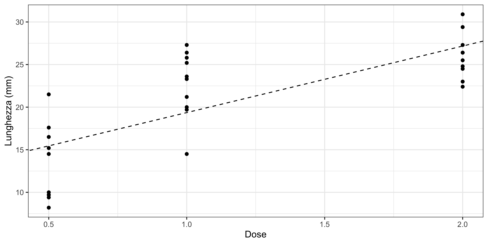

|
|
|
Statistica I
Esercitazione 7: tabelle di contingenza
Un nuovo indice di connessione?
Si consideri il seguente indice:
\[ \sum_{i=1}^h\sum_{j=1}^k (\text{contingenza}_{ij}) = \sum_{i=1}^h\sum_{j=1}^k (n_{ij} - \hat{n}_{ij}). \] Si spieghi come mai tale indice non è affatto appropriato per misurare la dipendenza tra due variabili.
Vitamina C e crescita dei maiali
Per verificare l’effetto della vitamina C sull’accrescimento dei maiali, a \(n = 30\) maiali sono state somministrate dalla nascita dosi diverse di acido ascorbico. Ad una età prefissata è stata poi misurata la lunghezza media dei denti (usata come una misura della crescita).
I dati sono i seguenti:
Ad esempio, il primo maiale coinvolto nello studio ha ricevuto una dose di \(5\)mg di vitamina C al giorno e, al controllo, la lunghezza media dei suoi denti era di \(15.2\)mm.
Si costruisca la tabella di contingenza congiunta e si dica se esiste o non esiste indipendenza in distribuzione utilizzando l’indice \(\chi^2\).
Si calcolino le medie della
lunghezzacondizionate alladose. Si dica se esiste dipendenza in media. Si ottenga il rapporto di correlazione \(\eta^2\).Si determini la retta di regressione e la si disegni tramite grafico opportuno assieme ai dati. Si ottenga l’indice di bontà d’adattamento \(R^2\) e il coefficiente di correlazione \(\rho\).
Schema della soluzione
In primo luogo, otteniamo la tabella di contingenza richiesta.
|
|
La tabella delle frequenze attese è invece pari a
|
|
Pertanto si ottiene che
\[\chi^2 = \frac{(1 - 0.3333)^2}{0.3333} + \frac{(0 - 0.3333)^2}{0.3333} + \cdots + \frac{(1 - 0.3333)^2}{0.3333} = 50.\] Di conseguenza, l’indice di connessione normalizzato è
\[ \chi^2_\text{norm} = \frac{50}{30 \min\{25 - 1, 3 - 1\}} = \frac{50}{60} = 0.83333. \]
Otteniamo ora la tabella delle media e varianze condizionate
| Numerosità | Media | Varianza | Devianza | |
|---|---|---|---|---|
| 0.5 | 10 | 13.23 | 17.9001 | 179.001 |
| 1 | 10 | 22.70 | 13.7660 | 137.660 |
| 2 | 10 | 26.06 | 6.3444 | 63.444 |
Si noti che la media complessiva è pari a \(\bar{y} = 20.66333\). Da questa tabella è quindi agevole calcolare la devianza tra i gruppi e la devianza entro i gruppi, ottenendo:
\[ \mathscr{D}_\text{tr}^2 = 10(13.23 - 20.66)^2 + 10(22.70 - 20.66)^2 + 10(26.06 - 20.66)^2= 885.265. \] Inoltre, la devianza entro i gruppi è pari a
\[ \mathscr{D}^2_\text{en} = 179.001 + 137.660 + 63.444 = 380.105, \] da cui si ottiene che \(\mathscr{D}^2 = 885.265 + 380.105 = 1265.37\). Il rapporto di correlazione è pertanto pari a \[\eta^2 = \frac{\mathscr{D}_\text{tr}^2}{\mathscr{D}^2} = \frac{885.265}{1265.37} = 0.699.\]
Otteniamo in primo luogo alcune quantità di interesse:
\[ \sum_{i=1}^nx_iy_i = 814.35, \qquad \sum_{i=1}^n x_i^2 = 52.5, \qquad \sum_{i=1}^ny_i^2 = 14074.57, \]
Inoltre, è possibile calcolare le medie aritmetiche delle due variabili precedenti:
\[ \bar{x} = 1.166667, \qquad \bar{y} = 20.66333. \]
Dalle precedenti quantità, è possibile ottenere che:
\[\text{cov}(x,y) = 3.037778, \qquad \text{var}(x) = 0.3888889, \qquad \text{var}(y) = 42.17899.\]
Di conseguenza, otteniamo che \(\hat{\beta} = 7.811\) e \(\hat{\alpha} = \bar{y} - 7.8111\bar{x} = 11.550\). La retta di regressione è quindi disegnata nel grafico sottostante.

Inoltre, semplici calcoli portano a \(\rho = 0.75\) e quindi \(R^2 = \rho^2 = 0.5626\).